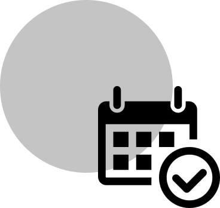
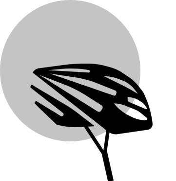

QR BIKE nasce a Bergamo nel 1990 dalla grande passione per il ciclismo dei suoi fondatori e si afferma come uno dei principali negozi di biciclette e accessori della zona, grazie alla qualità e alla varietà dei suoi prodotti selezionati. Siamo stati tra i primi in Italia a credere nelle potenzialità di alcuni marchi americani del settore, che presto avrebbero dominato il mercato delle Mountain Bike. Per rispondere al meglio alle esigenze dei sempre più numerosi clienti affezionati, nel 2001 abbiamo aperto il punto vendita di Vignola e nel 2005 abbiamo inaugurato un terzo negozio a Carpi.

QR BIKE ti da la possibilità di noleggiare la bicicletta per brevi periodi (settimanale, weekend…) per effettuare una gita o per testare la qualità delle bici da noi proposte.

Chi sceglie di noleggiare una delle nostre biciclette, ha la possibilità di scegliere secondo le proprie esigenze. Anche gli amanti del confort, grazie alla e-bike, potranno trovare una soluzione ideale per tranquille passeggiate nel pieno rispetto della natura.

Puoi scegliere di noleggiare anche degli accessori come caschi, borracce, guanti da bike,........